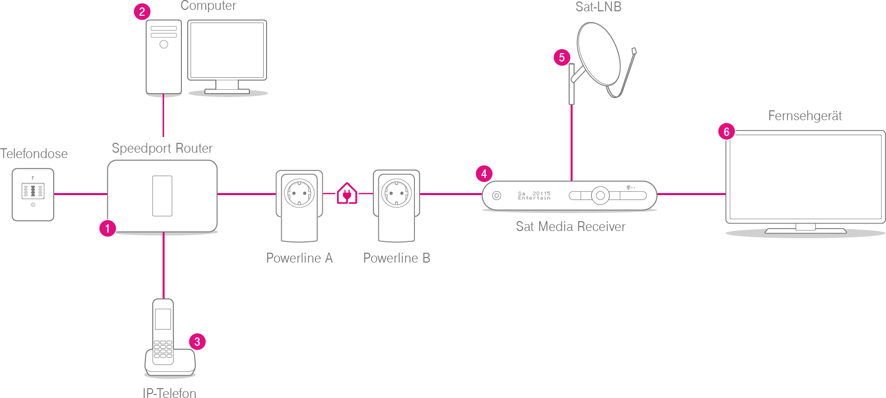
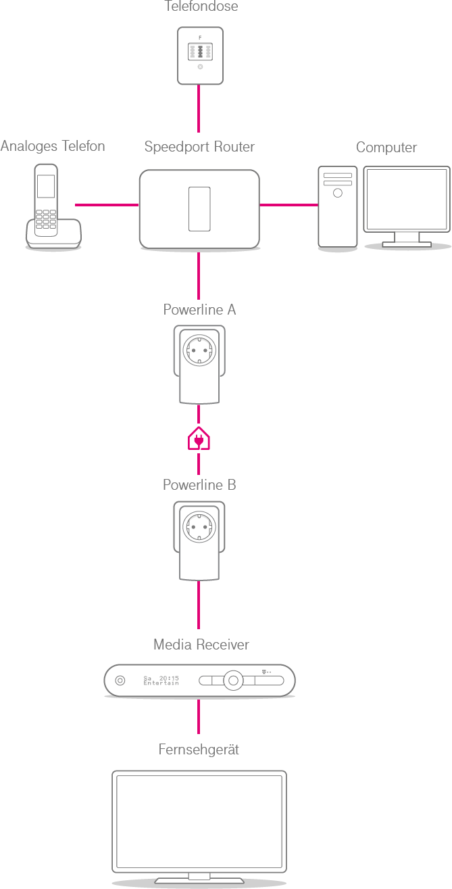
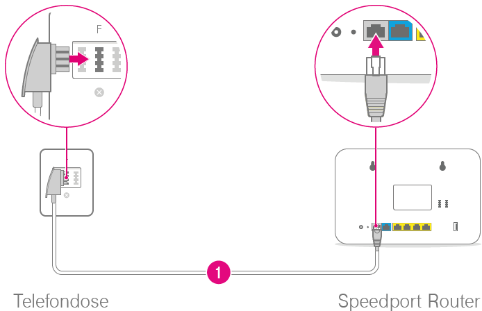
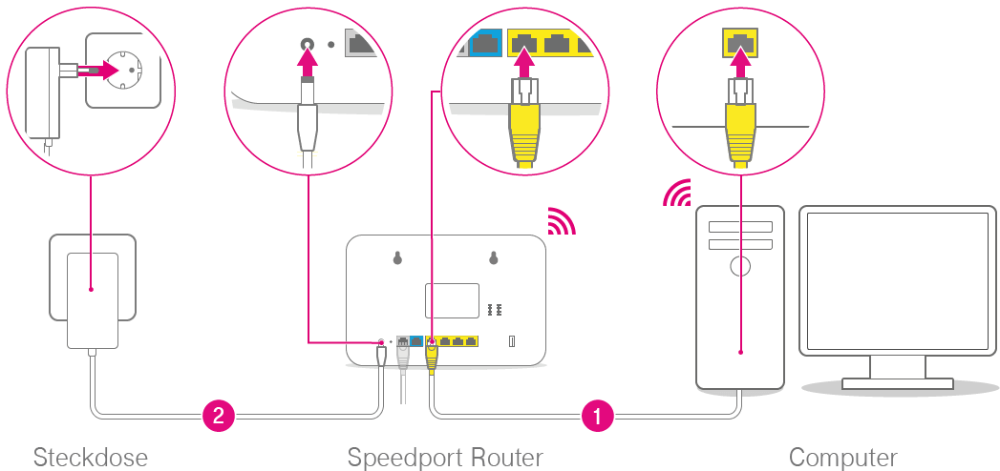
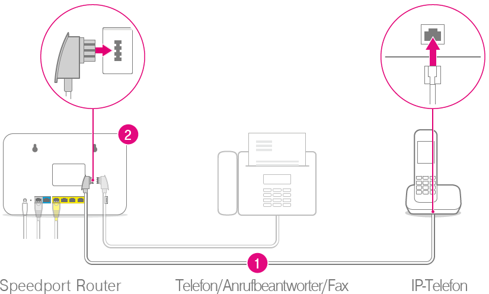
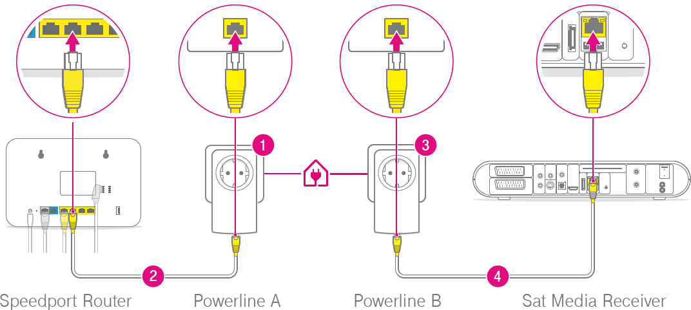
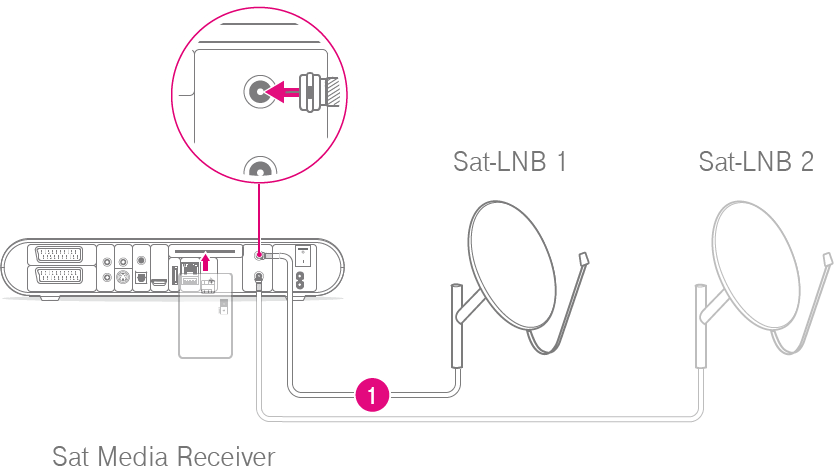
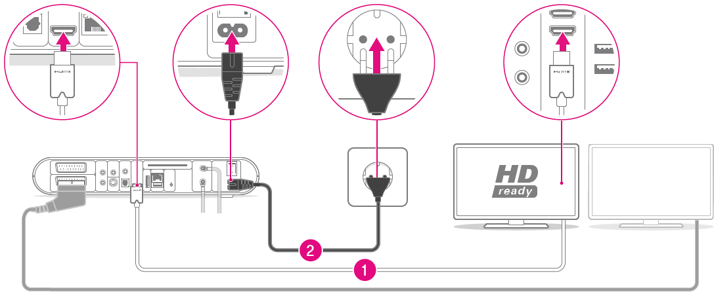

Willkommen bei der Entertain Installations & Verkabelungs Hilfe.
Wir begleiten Sie Schritt für Schritt durch die Einrichtung Ihres Entertain Paketes.
Einrichtungsanleitung: Satelliten-Anlage, IP-Telefonie, Powerline-Adapter
 Router anschließen

- Verbinden Sie den Speedport Router mit der Telefondose. Stecken Sie dazu das DSL-Kabel für den IP basierten Anschluss (grauer Stecker) in die Telefondose (mittlere Buchse) und den Speedport Router (graue Buchse: "DSL").
Computer anschließen

-
Schließen Sie den Computer mittels Netzwerkkabel
(gelbe Stecker) an. Alternativ können Sie auch
eine kabellose Verbindung (WLAN) herstellen.
Nähere Informationen dazu erhalten Sie in Ihren einrichtungsunterlagen. - Schließen sie das Netzteil an den Speedport Router und die Steckdose an.
IP-Telefon anschließen

-
Schließen Sie Ihr Telefon an die Telefonbuchse
("1" oder "2") des Speedport Routers an. Ein Faxgerät
oder einen Anrufbeantworter können sie an die
Buchse "2" anschließen.
Sollten Sie ein Speedphone besitzen, können Sie dieses ganz einfach mit der integrierten Funkbasis des Speedport Routers verbinden. Nähere Informationen finden sie in der Bedienungsanleitung des Speedphones. - Um Ihren IP-basierten Anschluss nutzen zu können, müssen Sie Ihren Speedport Router entsprechend konfigurieren. Folgen Sie dazu den Anweisungen der Bedienungsanleitung Ihres Speedport Routers.
Sat Media Receiver mit Speedport Router verbinden

Wichtig: Schließen Sie Ihren Sat Media Receiver erst an, wenn Sie den Speedport Router erfolgreich eingerichtet haben.
- Stecken Sie den ersten Powerline Adapter (A) in eine freie Steckdose in der Nähe des Speedport Routers
- Verbinden Sie den Speedport Router und den Powerline Adapter (A) mit einem LAN-Netzwerkkabel (gelb).
- Stecken Sie den zweiten Powerline Adapter (B) in eine freie Steckdose in der Nähe des Sat Media Receivers.
- Verbinden Sie den Sat Media Receiver und den Powerline Adapter (b) mit einem LAN-Netzwerkkabel (gelb).
Sat Media Receiver mit Sat-Anlage verbinden

-
Verbinden Sie das mit einem LNB verbundene
Koaxialkabel mit dem Satellitensignal-Anschluss
LNB 1 des Sat MEdia Receivers. Bei Bedarf
können Sie das Koaxialkabel eines zweiten
LNB an den Anschluss LNB 2 des Sat Media
Receivers anschließen.
Optional für hochaufgelöste HD+-TV-Programme schieben Sie die HD+-Karte in den Smartcard-Einschub des Sat Media Receivers.
Fernseher anschließen

- Verbinden Sie den Sat Media Receiver mit Ihrem Fernseher. Wenn Ihr Fernseher HD unterstützt, stecken Sie das HDML-Kabel in den Sat Media Receiver und Ihren Fernseher. Unterstützt Ihr Fernseher kein HD, nutzen Sie das SCART-Kabel.
- Schließen Sie das Netzkabel an den Sat Media Receiver und an eine Steckdose an.